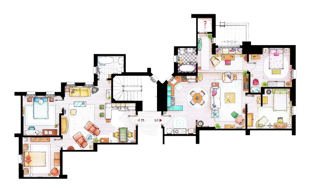

About
Friends is an American television sitcom created by David Crane and Marta Kauffman, which aired on NBC from September 22, 1994, to May 6, 2004, lasting ten seasons.[1] With an ensemble cast starring Jennifer Aniston, Courteney Cox, Lisa Kudrow, Matt LeBlanc, Matthew Perry and David Schwimmer, the show revolves around six friends in their 20s and 30s who live in Manhattan, New York City. The series was produced by Bright/Kauffman/Crane Productions, in association with Warner Bros. Television. The original executive producers were Kevin S. Bright, Kauffman, and Crane. Kauffman and Crane began developing Friends under the working title Insomnia Cafe between November and December 1993. They presented the idea to Bright, and together they pitched a seven-page treatment of the show to NBC. After several script rewrites and changes, including title changes to Six of One[2] and Friends Like Us, the series was finally named Friends.[3] Filming took place at Warner Bros. Studios in Burbank, California. The entire series ranked within the top ten of the final television season ratings; it ultimately reached the number-one spot in its eighth season. The series finale aired on May 6, 2004, and was watched by around 52.5 million American viewers, making it the fifth-most-watched series finale in television history[4][5][6] and the most-watched television episode of the 2000s.[7][8] Friends received acclaim throughout its run, becoming one of the most popular television shows of all time.[9] The series was nominated for 62 Primetime Emmy Awards, winning the Outstanding Comedy Series award in 2002[10] for its eighth season. The show ranked no. 21 on TV Guide's 50 Greatest TV Shows of All Time,[11] and no. 7 on Empire magazine's The 50 Greatest TV Shows of All Time.[12][13] In 1997, the episode "The One with the Prom Video" was ranked no. 100 on TV Guide's 100 Greatest Episodes of All-Time.[14] In 2013, Friends ranked no. 24 on the Writers Guild of America's 101 Best Written TV Series of All Time,[15] and no. 28 on TV Guide's 60 Best TV Series of All Time.[16] The sitcom's cast members returned for a reunion special aired on HBO Max on May 27, 2021.
Plot
"With a Little Help From My Friends" is a song written by the Beatles (and expertly covered by Joe Cocker) and it could easily be the subtitle for the thirty minute comedy, "Friends". In 1994, the idea was created for "Friends": a show about six friends in New York as they navigate their way through life and learn to grow up as they approach the third decade of their life. All, with the help from each other to get them through the obstacles that life naturally has for us. Monica is the excessively neat and organized "older sister" of the group, who works as a chef while yearning to find her ideal love. Ross, Monica's older brother, is a paleontologist with a lifelong crush on Rachel. He is a laid-back man with low self esteem and a recent divorcee. Rachel is the pretty, bubbly girl who spent most of her life as a spoiled rich princess. Now she must learn to face the real world. Chandler is Ross' college buddy and the guy who will crack jokes at a moment's notice. Phoebe is a lovable eccentric masseuse who easily could have fit in with Haight Ashbury in the 1960s. And Joey, the friend who has an inverse relationship between his good looks and his intelligence. He dreams of becoming an actor. These six individuals make up the cast of Friends. In May 2004, Friends officially ended it's phenomenal 10 year run. The show's time slot was taken over by a spin-off called Joey.
Casts